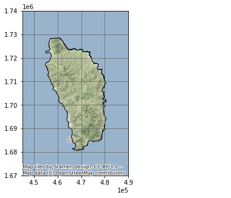
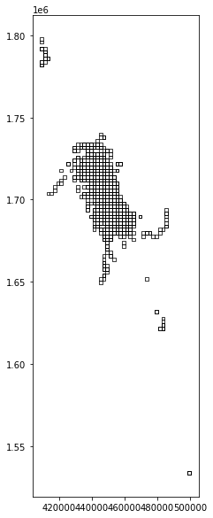
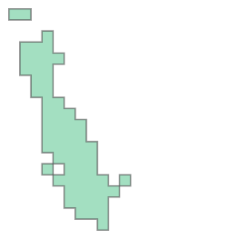

Homework # 3
Protecting Whales From Ships
Group # 2
Setup
Import Modules
import geopandas as gpd import rasterio as riofrom rasterio.plot import showimport numpy as npimport pandas as pdimport matplotlib.image as mpimgimport matplotlib.pyplot as pltimport osimport globimport contextily as ctximport shapelyfrom shapely.geometry import Polygon% matplotlib inlineParameters
= 'data/dominica/dma_admn_adm0_py_s1_dominode_v2.shp' = 'data/sightings2005_2018.csv' = 'data/station1249.csv' Constants
= 5.14 = 2002 # Dominica 1945 / British West Indies Grid = 4326 # WGS 84 (use as default CRS for incoming latlon) Load Dominica Shape File
= gpd.read_file(shoreline_shapefile)
ADM0_PCODE
ADM0_EN
geometry
0
DM
Dominica
POLYGON ((-61.43023 15.63952, -61.43019 15.639…
Inspect CRS
<Geographic 2D CRS: EPSG:4326>
Name: WGS 84
Axis Info [ellipsoidal]:
- Lat[north]: Geodetic latitude (degree)
- Lon[east]: Geodetic longitude (degree)
Area of Use:
- name: World.
- bounds: (-180.0, -90.0, 180.0, 90.0)
Datum: World Geodetic System 1984 ensemble
- Ellipsoid: WGS 84
- Prime Meridian: GreenwichSet CRS
EPSG 2002
= dominica_shp.to_crs(projected_EPSG)<Projected CRS: EPSG:2002>
Name: Dominica 1945 / British West Indies Grid
Axis Info [cartesian]:
- E[east]: Easting (metre)
- N[north]: Northing (metre)
Area of Use:
- name: Dominica - onshore.
- bounds: (-61.55, 15.14, -61.2, 15.69)
Coordinate Operation:
- name: British West Indies Grid
- method: Transverse Mercator
Datum: Dominica 1945
- Ellipsoid: Clarke 1880 (RGS)
- Prime Meridian: GreenwichPlot Dominica
= plt.subplots(figsize= (5 , 5 ))True , color = 'dimgray' )set (ylim= (1.67e6 ,1.74e6 ), xlim= (445000 , 490000 ))= [- 5 , 5 ])= ax, edgecolor = "k" , facecolor= "None" )= projected_EPSG)
png
Load Whale Sightings Data
= gpd.read_file(whales_CSV)
field_1
GPStime
Lat
Long
geometry
0
0
2005-01-15 07:43:27
15.36977117
-61.49328433
None
1
1
2005-01-15 08:07:13
15.3834075
-61.503702
None
2
2
2005-01-15 08:31:17
15.38106333
-61.50486067
None
3
3
2005-01-15 09:19:10
15.33532083
-61.46858117
None
4
4
2005-01-15 10:08:00
15.294224
-61.45318517
None
…
…
…
…
…
…
4888
4888
2018-05-25 12:01:25
15.39195
-61.572
None
4889
4889
2018-05-25 13:08:29
15.4189
-61.5833
None
4890
4890
2018-05-25 14:50:00
15.443483
-61.60995
None
4891
4891
2018-05-25 15:57:34
15.499866
-61.638333
None
4892
4892
2018-05-25 16:17:10
15.494783
-61.6482
None
4893 rows × 5 columns
Create GeoDataFrame
= gpd.points_from_xy(whales['Long' ], whales['Lat' ], crs = geodetic_EPSG)= gpd.GeoDataFrame(whales, geometry = points)Set CRS
= whales_gdf.to_crs(projected_EPSG)Plot Whale Sightings
= plt.subplots(figsize = (10 , 10 ))'equal' )True , color = 'dimgray' )set (xlim= (4e5 , 5e5 ), ylim= (1.5e6 , 1.8e6 ))= ax, color= 'None' , edgecolor = "k" )= ax, markersize = .1 , color = "purple" , alpha = .25 )'Whale Sightings' , fontsize= 12 )= [- 5 , 5 ])= projected_EPSG)
png
Create Grid
= whales_gdf.total_bounds= list (np.arange(xmin, xmax + cell_size, cell_size))= list (np.arange(ymin, ymax + cell_size, cell_size))def make_cell(x, y, cell_size):= [+ cell_size, y),+ cell_size, y + cell_size),+ cell_size)= shapely.geometry.Polygon(ring)return cell= []for x in xs:for y in ys:= make_cell(x, y, cell_size)Create GeoDataFrame
= gpd.GeoDataFrame({'geometry' : cells}, crs = geodetic_EPSG)Set CRS
= grid.set_geometry(crs = projected_EPSG, col = grid['geometry' ])Plot Grid
= "none" , figsize = (10 , 10 ), linewidth = 1 )<AxesSubplot:>
png
= grid.sjoin(whales_gdf, how= "inner" )Plot Whale Grid
= "none" , figsize = (10 , 10 ), linewidth = .75 )<AxesSubplot:>
png
Summarise Whale Counts
'count' ] = whale_grid.groupby(whale_grid.index).count()['index_right' ]Find Primary Whale Habitat
= grid[grid['count' ] > 20 ]Plot Whale Habitat
= "none" , figsize = (10 , 10 ), linewidth = .75 )<AxesSubplot:>
png
Create Unary Union
= grid.unary_union
svg
Create Vessel Speed Reduction Zone
The vessel speed reduction zone is determined by the whale habitat areas in which more than 20 whales were observed per 2,000 m².
= grid_union.convex_hull
svg
Make GeoDataFrame
= gpd.GeoDataFrame(index = [0 ], geometry = [grid_convex], crs = projected_EPSG)Plot Whale Habitat
= plt.subplots(figsize = (10 , 10 ))True , color = 'dimgray' )set (xlim= (4.4e5 , 4.85e5 ), ylim= (1.675e6 , 1.73e6 ))= ax, color= 'None' , edgecolor = "k" )= ax, edgecolor = "purple" , facecolor = 'none' )'Whale Habitat' , fontsize= 12 )= [- 5 , 5 ])= projected_EPSG)
png
= whale_habitat.difference(dominica_shp)= gpd.GeoDataFrame(geometry = whale_habitat_diff)
geometry
0
POLYGON ((456480.652 1682792.746, 454480.652 1…
= plt.subplots(figsize = (10 , 10 ))True , color = 'dimgray' )set (xlim= (4.4e5 , 4.85e5 ), ylim= (1.675e6 , 1.73e6 ))= ax, color= 'None' , edgecolor = "k" )= ax, edgecolor = "purple" , facecolor = 'none' )'Whale Habitat' , fontsize= 12 )= [- 5 , 5 ])= projected_EPSG)
png
geometry
0
POLYGON ((456480.652 1682792.746, 454480.652 1…
Load AIS Vessel Data
= gpd.read_file(vessels_CSV)= gpd.points_from_xy(vessels['LON' ], vessels['LAT' ], crs = geodetic_EPSG)Create GeoDataFrame
= gpd.GeoDataFrame(vessels, geometry = points)
field_1
MMSI
LON
LAT
TIMESTAMP
geometry
0
0
233092000
-61.84788
15.23238
2015-05-22 13:53:26
POINT (-61.84788 15.23238)
1
1
255803280
-61.74397
15.96114
2015-05-22 13:52:57
POINT (-61.74397 15.96114)
2
2
329002300
-61.38968
15.29744
2015-05-22 13:52:32
POINT (-61.38968 15.29744)
3
3
257674000
-61.54395
16.2334
2015-05-22 13:52:24
POINT (-61.54395 16.23340)
4
4
636092006
-61.52401
15.81954
2015-05-22 13:51:23
POINT (-61.52401 15.81954)
…
…
…
…
…
…
…
617257
238722
256525000
-61.40679
15.36907
2015-05-21 21:34:59
POINT (-61.40679 15.36907)
617258
238723
311077100
-61.37539
15.27406
2015-05-21 21:34:55
POINT (-61.37539 15.27406)
617259
238724
377907247
-61.39461
15.30672
2015-05-21 21:34:46
POINT (-61.39461 15.30672)
617260
238725
253365000
-61.49001
16.14007
2015-05-21 21:34:46
POINT (-61.49001 16.14007)
617261
238726
329002300
-61.48073
15.44751
2015-05-21 21:34:45
POINT (-61.48073 15.44751)
617262 rows × 6 columns
Set CRS
= vessels_gdf.to_crs(projected_EPSG)Make TIMESTAMP datetime
'TIMESTAMP' ] = pd.to_datetime(vessels_gdf['TIMESTAMP' ])Select Vessels Inside Whale Habitat
= vessels_gdf.sjoin(whale_habitat, how = 'inner' )
field_1
MMSI
LON
LAT
TIMESTAMP
geometry
index_right
2
2
329002300
-61.38968
15.29744
2015-05-22 13:52:32
POINT (464555.392 1690588.725)
0
7
7
338143127
-61.39575
15.33418
2015-05-22 13:50:54
POINT (463892.452 1694650.397)
0
13
13
329002300
-61.38968
15.29745
2015-05-22 13:48:32
POINT (464555.389 1690589.831)
0
15
15
338143015
-61.39558
15.33423
2015-05-22 13:47:31
POINT (463910.683 1694655.978)
0
16
16
338143127
-61.39757
15.33139
2015-05-22 13:47:25
POINT (463697.964 1694341.275)
0
…
…
…
…
…
…
…
…
617252
238717
329002300
-61.4885
15.4706
2015-05-21 21:37:45
POINT (453901.647 1709712.916)
0
617253
238718
338143015
-61.39553
15.33448
2015-05-21 21:37:14
POINT (463915.972 1694683.643)
0
617255
238720
338143127
-61.39563
15.33468
2015-05-21 21:35:12
POINT (463905.177 1694705.734)
0
617259
238724
377907247
-61.39461
15.30672
2015-05-21 21:34:46
POINT (464023.288 1691613.624)
0
617261
238726
329002300
-61.48073
15.44751
2015-05-21 21:34:45
POINT (454741.236 1707161.130)
0
167402 rows × 7 columns
Plot Vessel Data
= plt.subplots(figsize = (10 , 10 ))True , color = 'dimgray' )set (xlim= (4.4e5 , 4.85e5 ), ylim= (1.675e6 , 1.73e6 ))= ax, color= 'None' , edgecolor = "k" )= ax, markersize = .1 , color = "purple" , alpha = .1 )'Vessel Data Inside Whale Habitat' , fontsize= 12 )= [- 5 , 5 ])= projected_EPSG)
png
Calculate Vessel Speeds
Sort
= vessels_whale.sort_values(['MMSI' , 'TIMESTAMP' ])Make Copy and Shift
= vessels_whale_sorted.shift(periods = 1 )Join Sorted With Shifted
= vessels_whale_sorted.join(vessels_whale_shifted, lsuffix = "_original" , rsuffix = "_copy" )Match MMSI Numbers
= vw_sorted_shifted[vw_sorted_shifted['MMSI_original' ] == vw_sorted_shifted['MMSI_copy' ]]Set Geometires
= vw_matched.set_geometry(col = vw_matched['geometry_original' ], crs = projected_EPSG)Find the Distance (in meters - m)
'distance_m' ] = vw_matched['geometry_original' ].distance(vw_matched['geometry_copy' ]) Find the Elapsed Time (seconds - s)
'time_s' ] = vw_matched['TIMESTAMP_original' ] - vw_matched['TIMESTAMP_copy' ]'time_s' ] = vw_matched['time_s' ].dt.total_seconds() Find the Speed (meters per seconds - ms)
'speed_ms' ] = vw_matched['distance_m' ] / vw_matched['time_s' ]'10_kn_time' ] = vw_matched['distance_m' ] / ten_kn_in_ms'time_diff' ] = vw_matched['10_kn_time' ].sub(vw_matched['time_s' ])= vw_matched[vw_matched['time_diff' ] > 0 ]Plot Vessels travelling over 10 knots
= plt.subplots(figsize = (10 , 10 ))True , color = 'dimgray' )set (xlim= (4.4e5 , 4.85e5 ), ylim= (1.675e6 , 1.73e6 ))= ax, color= 'None' , edgecolor = "k" )= ax, markersize = .1 , color = "purple" , alpha = .25 )'Vessel Data Inside Whale Habitat' , fontsize= 12 )= [- 5 , 5 ])= projected_EPSG)
png
View Summary Stats
'distance_m' , 'time_s' , 'speed_ms' ]].describe()
distance_m
time_s
speed_ms
count
21282.000000
21282.000000
2.128200e+04
mean
1602.087151
198.250728
inf
std
1473.334485
187.465984
NaN
min
64.542545
0.000000
5.140343e+00
25%
838.258302
120.000000
5.949960e+00
50%
1150.938066
141.000000
6.826952e+00
75%
1805.137371
181.000000
8.696041e+00
max
28330.585863
4085.000000
inf
Impact of a 10 knot Speed Reduction Zone
We calculated that ship vessel traffic would be slowed by 2 minutes per mile on average. Over the course of the year, this equated to approximately 28 days of increased shipping time.
= vw_matched['time_diff' ].sum () / 60 / 60 / 24 27.9423247732646= vw_matched['time_diff' ].mean() / 60 1.8906563139508044